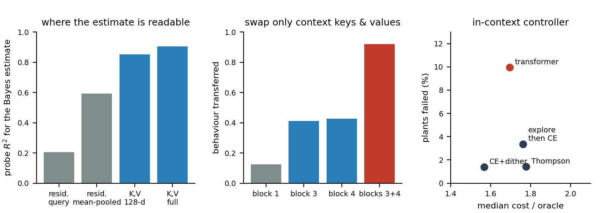
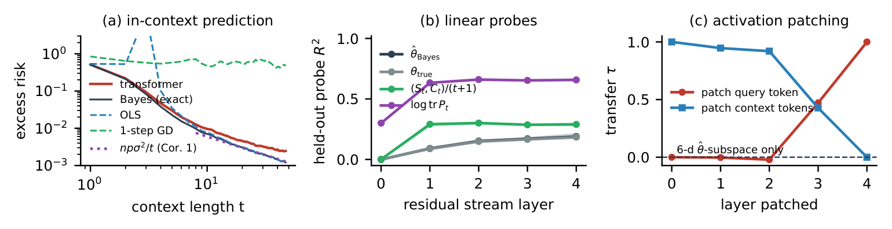
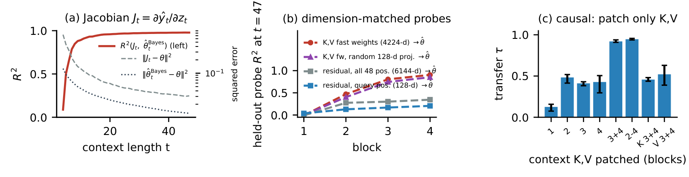
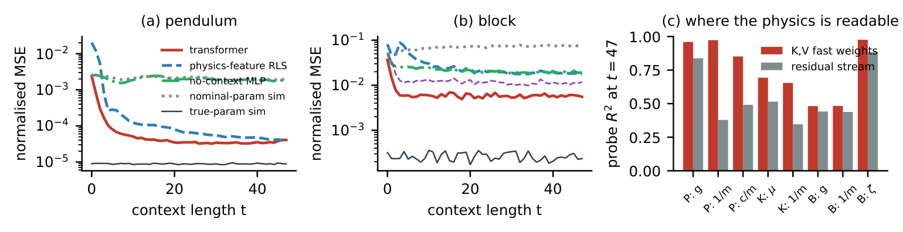
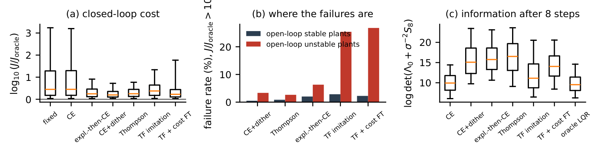

Preprint 2026 · pre-registered · code, models and every number public
What a Transformer Learns When It Adapts to Unknown Physics In-Context: Probing, Patching and Controlling
Independent researcher

In one paragraph
A small transformer gets 48 steps of a system it has never seen: unknown mass, unknown friction, unknown sign of the input. It has to predict the next state, or control the system, with no gradient steps. We pre-registered what we expected to find inside and then tested it with exact optimal references and causal interventions. The model is Bayes-optimal while data are scarce. The mechanism we bet on, a parameter estimate written into the residual stream, is not there. What is there: the sufficient statistics of the context, stored in the attention key-value memory of the last two blocks, where swapping them moves the model's behaviour almost completely.
Findings
- Bayes-optimal until it isn't. Within 1.23× of the exact Bayes predictor up to t = 4, then an approximation floor at 1.59× the Bayes excess risk (pre-registered tolerance 1.25×: rejected). Longer training or more depth brings it to about 1.22×, never to 1.
- The pre-registered mechanism is wrong. Best residual-stream probe R² = 0.19 against a threshold of 0.8; steering along it does nothing; swapping its subspace transfers 0.0001 of the behaviour.
- The statistics live in the key-value memory (exploratory). Fast weights Cov(v, k) of blocks 3–4 read the sufficient statistics with R² = 0.92 (0.75–0.76 after projection to the residual stream's 128 dimensions) against 0.68–0.71 for the best residual-stream readout. Swapping only those keys and values transfers 91–94% of another episode's behaviour; block 1 alone, 7–16%. Replicated on 10 seeds (0.93 ± 0.01).
- Then confirmed in advance. A second pre-registration (tag prereg2-94b6cf8), pushed before the analyses ran, tested the account on three architectures it was not derived from. All 11 tests hold: swapping the late blocks' keys and values moves 0.85–0.96 of the behaviour, block 1 alone 0.01–0.13, the key-value memory beats the residual stream by 0.21–0.35 R² at matched dimension, and under a shifted prior the network keeps applying its training prior (10 of 10 seeds).
- Physics. On a block pushed with Coulomb friction the transformer beats physics-feature regression by 3.2× and structured system identification with the exact MuJoCo simulator (0.0058 vs 0.011), because the contact state is hidden from (x, ẋ) and recoverable from history.
- Control. The in-context controller explores without being told to (4.2 nats more information than certainty equivalence by t = 8) and is competitive in median cost (1.69× oracle vs 1.57× for dithered certainty equivalence), but fails on 10% of plants against 1.4%, almost all open-loop unstable.
Abstract
Sequence models that adapt to unknown dynamics from their own history are common in robot learning, but what they compute is unclear. We study small transformers trained from scratch, in a pre-registered design with exact optimal references and causal interventions, on linear systems with unknown parameters, one-degree-of-freedom MuJoCo systems with contact, and linear adaptive control. The predictors are Bayes-optimal while data are scarce, then settle at an approximation floor (1.59× the Bayes excess risk). Our pre-registered mechanism, a linearly readable and causally used parameter estimate in the residual stream, is rejected (probe R² = 0.19; steering and patching have no effect). Exploratory analyses locate the sufficient statistics of the context in the attention key–value memory of the last two blocks: they are read from it with R² = 0.92, against 0.68–0.71 for the best residual-stream readout, and replacing only those keys and values with another episode's transfers 0.91–0.94 of its behaviour. MuJoCo physical parameters show the same pattern, with system-dependent margins. A controller trained by imitation and then on closed-loop cost excites the plant without an identification objective, though less than dithered certainty equivalence, and is competitive in median cost but fails on 10.0% of plants, almost all open-loop unstable, against 1.4% for dithered certainty equivalence. Code, pre-registration and every number are public.
The pre-registered scoreboard
Thirteen tests, committed before the main experiments and Holm-corrected. Seven held up and six did not, including the headline mechanism. All of them stay in the paper.
| Test | Result | Verdict |
|---|---|---|
| H1a, H1b: closer to Bayes than to OLS / one-step gradient descent | by 0.27 / 0.55 | supported |
| H1c: excess risk within 1.25× of Bayes | 1.59× [1.56, 1.62] | rejected |
| H2a: residual-stream probe for the estimate, R² > 0.8 | 0.19 [0.17, 0.21] | rejected |
| H2b: the probe reads the Bayes estimate better than the true parameters | +0.005 | supported |
| H2c: sufficient statistics readable at an earlier block than the estimate | 3 of 3 seeds | supported |
| H3a, H3b: steering along the probe / swapping its subspace changes the prediction | 0.00 / 0.0001 | rejected |
| H4a: pushed block, transformer beats physics-feature RLS | 0.0058 vs 0.019 | supported |
| H4c, H4d: physical parameters linearly readable and steerable on both systems | no / no | rejected |
| H5a: controller beats the best constant gain (mean cost) | by 584 [147, 1179] | supported |
| H5b: controller beats certainty equivalence (mean cost) | 112 [−149, 343] | not supported |
| H5d: controller gathers more information than certainty equivalence by t = 8 | +4.2 nats [4.06, 4.31] | supported |
Every change after the pre-registration, including two bugs found in our own code and the analyses added after an external review, is listed in DEVIATIONS.md.
Prediction on linear systems

Where the estimate lives

Physics in MuJoCo

In-context control

Try it
Live demo: the main model runs in this browser, next to the exact Bayes estimator, on systems you pick. The quickstart notebook reruns the three headline checks on fresh episodes in a few minutes on a CPU. All 51 trained checkpoints are on the release; one command reproduces the whole paper:
git clone https://github.com/nonberw/suss.git && cd suss
pip install -r requirements.txt
bash scripts/run_all.sh # about a day on a 4 GB laptop GPUCite
@misc{zhambakin2026suss,
author = {Zhambakin, Anuar},
title = {What a Transformer Learns When It Adapts to Unknown Physics In-Context:
Probing, Patching and Controlling},
year = {2026},
howpublished = {Preprint},
doi = {10.5281/zenodo.24031898},
url = {https://github.com/nonberw/suss}
}